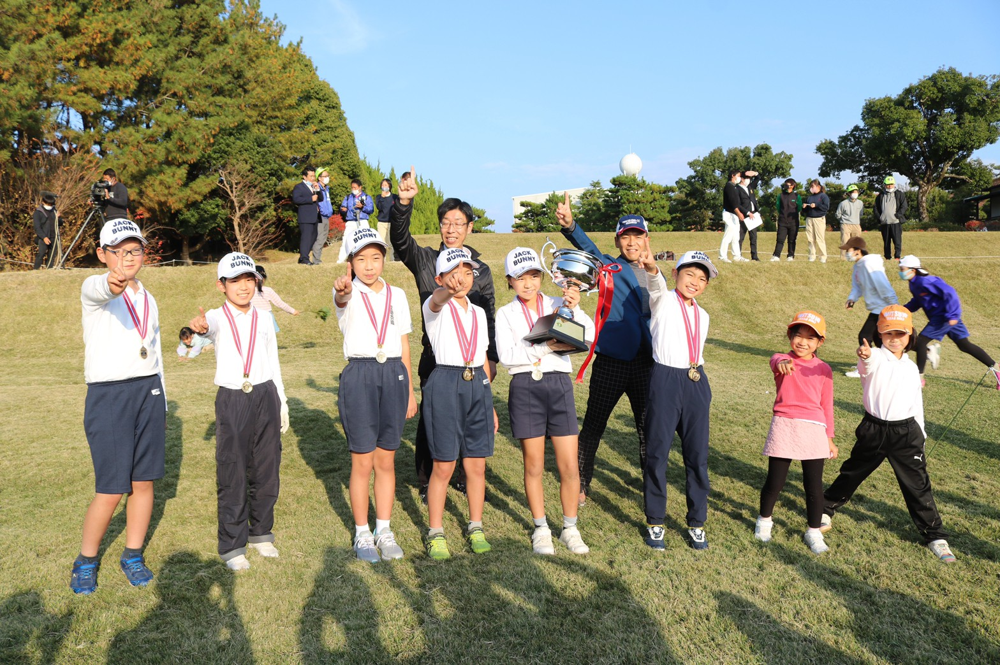
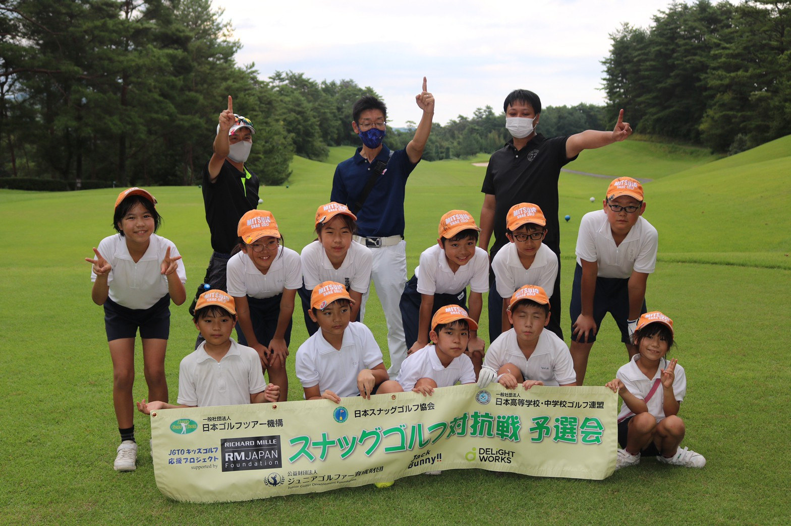

最近の結果

第18回スナッグゴルフ対抗戦JGTOカップ全国大会in三木
2021年11月20日 三木ゴルフ俱楽部
団体の部 優勝
青コースベストスコア賞
赤コースベストスコア賞
ホールインワン賞
アルバトロス賞

スナッグゴルフ対抗戦第15回広島県予選会
2021年8月28日 賀茂カントリークラブ
団体の部 優勝
ベストスコア賞
交流の部 ベストスコア賞
アルバトロス賞
 谷原秀人ジュニアクラシックス・スナッグゴルフ大会兼広島県予選会
谷原秀人ジュニアクラシックス・スナッグゴルフ大会兼広島県予選会
2021年8月1日 松永カントリークラブ
団体の部 優勝
ベストスコア賞
交流の部 ベストスコア賞
アルバトロス賞 2名
主な成績
全国大会
第18回スナッグゴルフ対抗戦JGTOカップ 2021年11月20日(土) 三木ゴルフ倶楽部優勝
第16回スナッグゴルフ対抗戦JGTOカップ 2018年7月15日(日) グランディ那須白河ゴルフクラブ第2位
第15回スナッグゴルフ対抗戦JGTOカップ 2017年7月16日(日) グランディ那須白河ゴルフクラブ優勝
第13回スナッグゴルフ対抗戦JGTOカップ 2015年9月21日(祝・月) 仙台ヒルズゴルフ倶楽部 優勝
第11回スナッグゴルフ対抗戦JGTOカップ 2013年8月17日(土) 仙台ヒルズゴルフ倶楽部 優勝
第9回スナッグゴルフ対抗戦JGTOカップ 2011年11月5日(土) 宍戸ヒルズカントリークラブ 優勝
第6回スナッグゴルフ対抗戦JGTOカップ 2008年7月5日(土) 宍戸ヒルズカントリークラブ第2位
第4回スナッグゴルフ対抗戦JGTOカップ 2006年7月1日(土) 宍戸ヒルズカントリークラブ 優勝